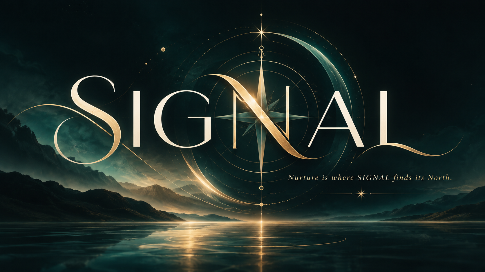

TEHFL brings together lived experience from the trades, healthcare, leadership, and everyday life — then turns it into conversations, frameworks, and tools people can actually use.

Sustainable progress over quick fixes. Notice what matters. Give it the right kind of attention. Keep moving.
TEHFL is a founder-led education, community, and practical-tools business. Eric’s work grows from real worksite leadership and team development. Jaymie’s work grows from healthcare, reflection, professional identity, and practical decision-making.
Practical leadership, communication, accountability, and personal-team development rooted in real worksite experience.
A life-team framework using basketball positions to examine Direction, Communication, Balance, Grit & Accountability, and Stability.
An interactive way to notice what keeps surfacing, understand what deserves attention, and move toward an intentional next step.
Not every person who finds TEHFL is immediately a sales lead. The system begins with value: conversation, reflection, and a relevant next step.
Bring what’s on your mind. Notice what may be easy to overlook. Explore what sits underneath the surface.
Direction. Communication. Balance. Grit & Accountability. Stability. A practical way to examine the team around your life.
Build the system around the person, not around the paperwork.
The website, forms, events, contact tracking, and follow-up should feel like one connected experience.